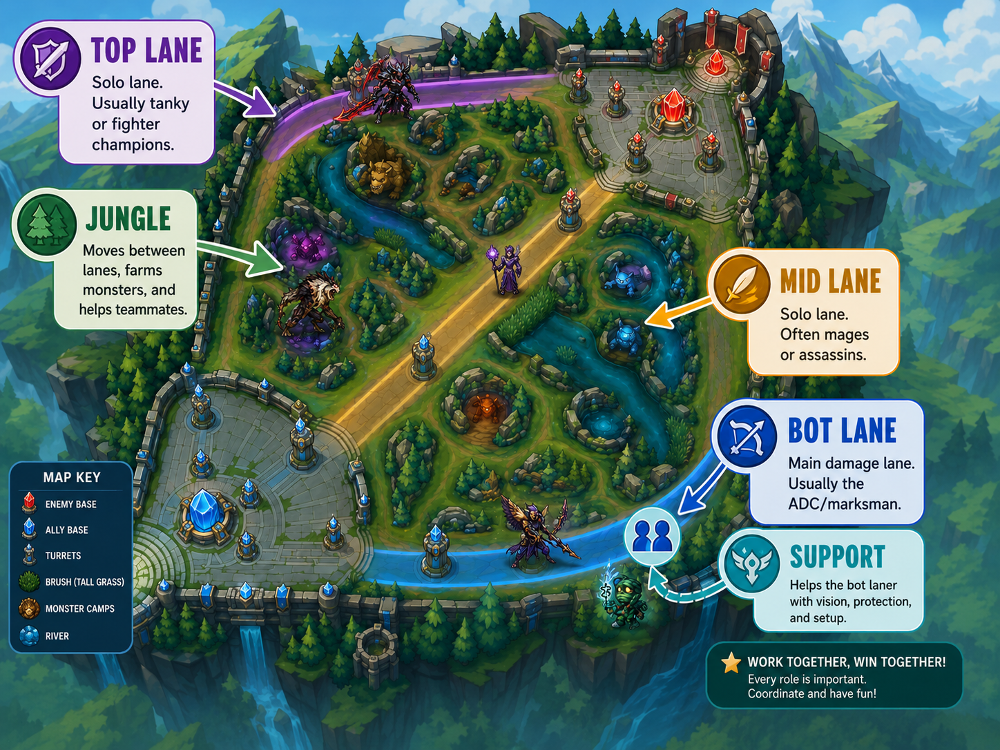
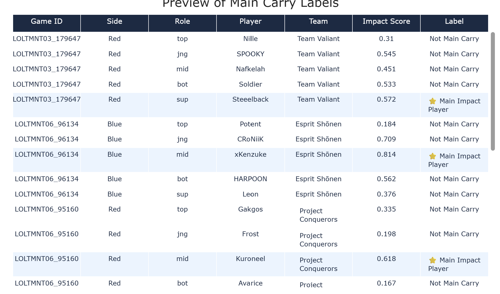
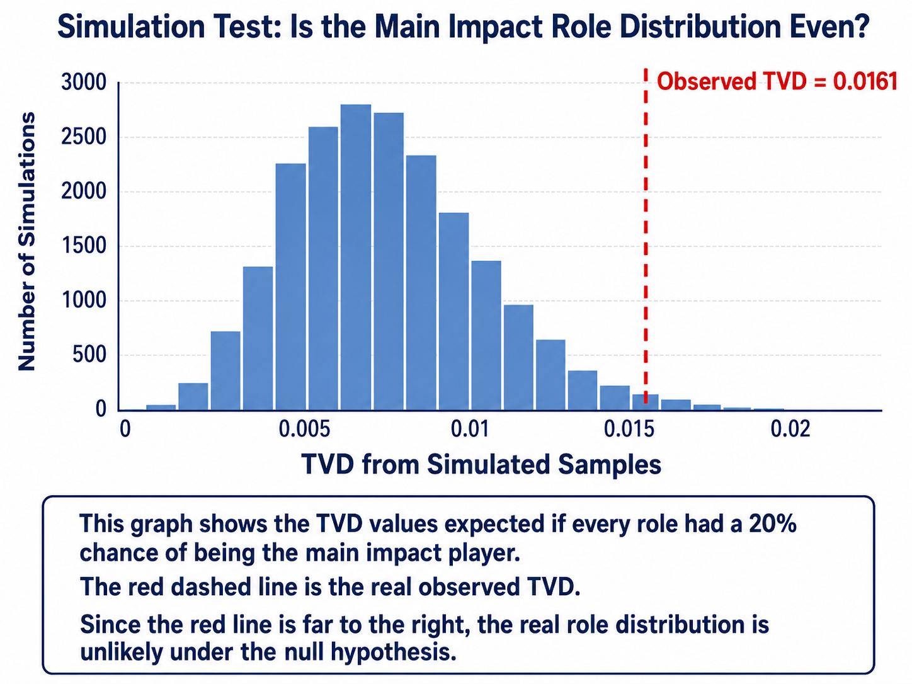
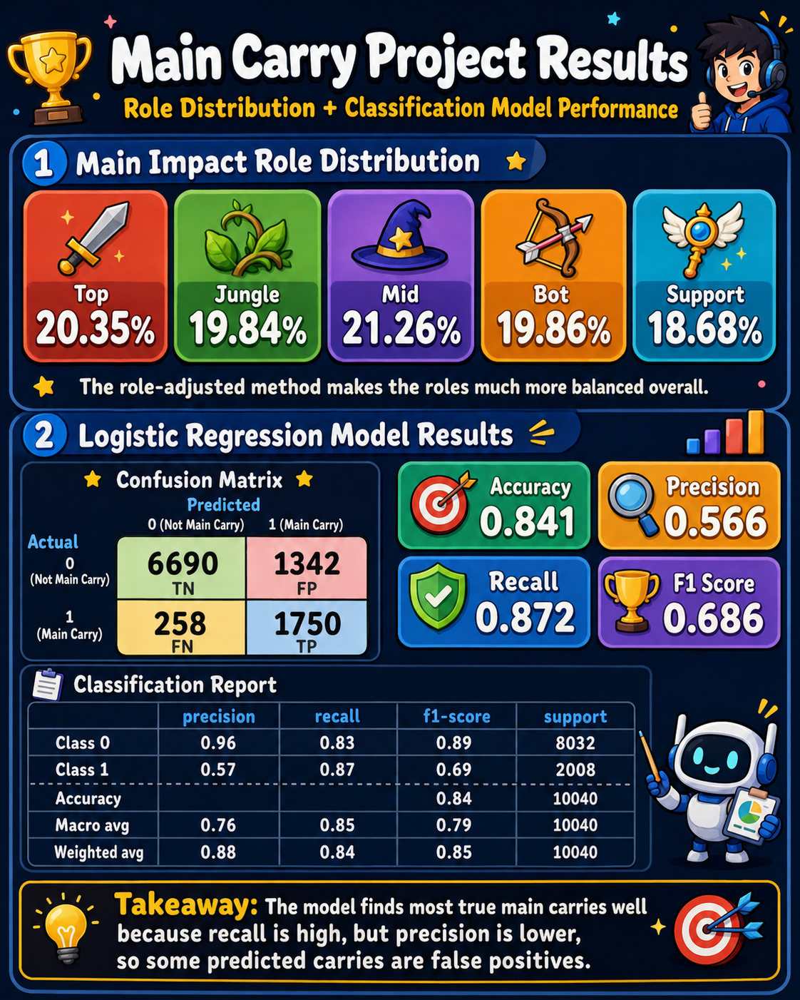

Introduction
League of Legends is a 5 vs. 5 team game. Each player has one role: top, jungle, mid, bot, or support. Each role helps the team win in a different way.
This project uses professional League of Legends esports data from Oracle's Elixir. The data includes player stats, team stats, and match stats from 2025 games.
Main question: Among winning teams, which role most often becomes the team’s main impact player?
I use the phrase main impact player instead of only “carry” because players can help their team in different ways. For example, a bot player may carry through damage, while a support may carry through assists, vision, and staying alive.

What Does Role-Adjusted Impact Mean?
A normal carry score based only on kills, damage, or gold would usually favor damage-heavy roles like bot and mid. That would be unfair because every role has a different job.
To make the comparison more fair, I compare each player only to other players in the same role. This means supports are compared to supports, junglers to junglers, and bot players to bot players.
This matters because a support should not be expected to out-damage a bot laner, and a jungler should not be judged exactly like a lane player.
| Feature | Simple Meaning |
|---|---|
| KDA | Did the player get kills and assists while avoiding deaths? |
| Kill Participation | Was the player involved in many of the team’s kills? |
| Damage Per Minute | Did the player deal strong damage for their role? |
| Vision Per Minute | Did the player help provide map vision for their role? |
| Low Death Share | Did the player avoid being a large share of the team’s deaths? |
Data Cleaning and Exploratory Data Analysis
The dataset has up to 12 rows for each game: 5 players on the blue team, 5 players on the red team, and 2 team summary rows. Since my project is about individual player impact, I kept only the player rows.
I focused on winning teams because I wanted to identify the main impact player on each winning team. Then I created new impact features like KDA, kill participation, death share, damage per minute, and vision per minute.
After that, I turned these stats into role-based percentiles. This is the key step that makes the comparison fair: each player is ranked compared to players in the same role.
Finally, for each winning team, the player with the highest role-adjusted impact score was labeled main_carry = 1. The other four players were labeled main_carry = 0.
In the final cleaned data, there are 50,190 winning-player rows and 10,038 winning teams. Since one player per winning team is labeled as the main impact player, the main carry rate is 0.20, or 1 out of every 5 players.

Assessment of Missingness
For the missingness section, I looked at goldat10. This column records a player’s gold at 10 minutes. Some rows are missing this value.
This missingness probably happens because not every match has complete timeline data. To check this, I created a column called goldat10_missing, which says whether goldat10 is missing or not.
Then I tested whether missingness in goldat10 depends on datacompleteness. This makes sense because datacompleteness tells us whether the match data was complete or partial.
Why this is likely MAR
If missingness depends on another observed column, like datacompleteness, then the missingness is likely MAR, or Missing At Random.
Why this is probably not NMAR
I do not think goldat10 is NMAR because the value is probably missing due to data tracking, not because of the actual gold value itself.
In simple words, the missing value is probably caused by how the match was recorded, not by whether the player had high or low gold.
Hypothesis Testing
I tested whether all five roles are equally likely to be the main impact player among winning teams.
Null hypothesis: Top, jungle, mid, bot, and support are equally likely to be the main impact player. Each role should appear about 20% of the time.
Alternative hypothesis: Some roles are more likely than others to be the main impact player.
I used Total Variation Distance (TVD) as my test statistic. TVD measures how far the real role distribution is from the expected 20%, 20%, 20%, 20%, 20% split.
Observed TVD
0.0161
p-value
0.0081
Since the p-value is less than 0.05, I reject the null hypothesis. This means the role distribution is not perfectly even. However, because I used role-adjusted scoring, the results are still much more balanced than a raw damage-only score would be.
Observed Main Impact Role Distribution
After using the role-adjusted impact score, the main impact player distribution was close to balanced across the five roles.
Top
20.35%
Jungle
19.84%
Mid
21.26%
Bot
19.86%
Support
18.68%

Framing a Prediction Problem
For the prediction part, I built a binary classification model. The model predicts whether a player is the main impact player on their winning team.
- 1 = main impact player
- 0 = not main impact player
This is a classification problem because the model predicts a category, not a number.
Also, this is not trying to predict the carry before the game starts. The label is based on completed-game stats, so the model classifies completed player performances.

Baseline Model
My baseline model was a Logistic Regression model. I used simple post-game features: position, kills, deaths, assists, team kills, and team deaths.

The position column is categorical, so I used one-hot encoding in an sklearn Pipeline. Numerical columns were imputed and standardized.
I used this baseline to answer a simple question: Are basic combat stats enough to predict the main impact player?
Accuracy
0.800
Precision
0.501
Recall
0.838
F1 Score
0.627
The baseline model was a reasonable starting point, but it did not fully capture player efficiency or role-specific impact.
Final Model
My final model also used Logistic Regression, but I added better engineered features. These features were designed to measure player impact more fairly.
The final model included KDA, kill participation, death share, damage per minute, vision per minute, and role-adjusted percentile features.
I also used GridSearchCV to tune the model’s hyperparameter. This means I tested multiple settings and chose the one that performed best using cross-validation.
Accuracy
0.857
Precision
0.596
Recall
0.885
F1 Score
0.712
The final model improved the F1-score from 0.627 to 0.712. This means the engineered features helped the model identify main impact players better than the baseline model.
Model Evaluation and Fairness Analysis
I evaluated the models using a confusion matrix, accuracy, precision, recall, and F1-score.
| Metric | Simple Meaning |
|---|---|
| Accuracy | Out of all predictions, how many were correct? |
| Precision | When the model predicted main impact player, how often was it right? |
| Recall | Out of the real main impact players, how many did the model find? |
| F1-score | A balance between precision and recall. |
I care most about F1-score because the classes are imbalanced. Only one out of five winning players is labeled as the main impact player.

Fairness Analysis
For fairness, I checked whether the model performed differently for different types of roles. This matters because damage roles and utility roles contribute in different ways.
I compared model performance between damage roles and utility roles. The fairness test did not show strong evidence that the model performed unfairly between these groups.
Overall, the role-adjusted method helped make the project more fair because it avoided judging all players by the same raw damage or kill stats.